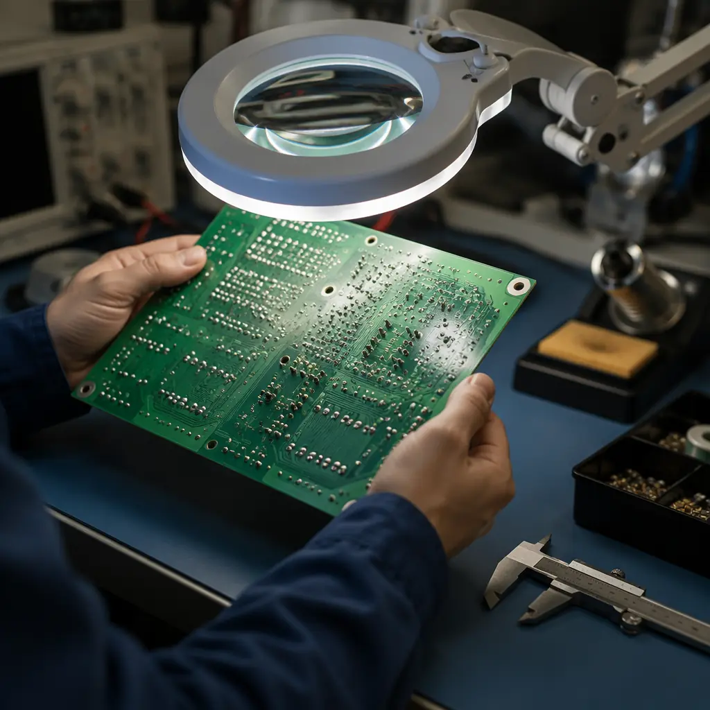

When you receive 10,000 PCBs from a Chinese manufacturer and find 50 defects, is that a good result or a supplier failure? The answer depends entirely on what metrics you negotiated and which benchmarks you're measuring against. Most procurement managers evaluate PCB suppliers on price, lead time, and certifications — but the KPIs that actually predict long-term manufacturing performance are DPPM (defective parts per million), first-pass yield, process capability (CpK), and on-time delivery rate. Without specifying target thresholds for these metrics in your supplier agreement, you're essentially buying blind.
At Huaxing PCBA, our 8 SMT lines process over 800 million solder joints per day, and our quality system tracks every defect at the individual board level. Based on real production data from high-volume PCB fabrication and assembly runs across automotive, medical, and industrial customers, here's what procurement managers should know about quality metrics — and what numbers constitute a genuinely excellent supplier.
DPPM: The Universal Quality Metric — and What It Actually Measures
DPPM (defective parts per million) is the semiconductor industry's legacy metric that has become the standard yardstick for PCB and PCBA quality. One DPPM = one defective board per million boards shipped. A supplier claiming "99.9% quality" sounds impressive but actually means 1,000 DPPM — which is catastrophic for automotive or medical applications. The math matters.
Bare PCB Fabrication: Target <500 DPPM, Excellent <100 DPPM
For bare PCB fabrication, defects are typically visual or dimensional: shorts, opens, plating voids, solder mask misregistration, or out-of-spec hole sizes. A supplier running <500 DPPM is competent. A supplier consistently below 100 DPPM is world-class and likely has automated optical inspection (AOI) at multiple process stages — not just final inspection. Our IPC-A-600 Class 3 production line maintains <50 DPPM on high-layer-count boards through inline AOI after etching, after solder mask, and at final electrical test. See our AOI vs X-Ray vs SPI inspection guide for how automated inspection drives these numbers.
PCBA (Assembly): Target <1,000 DPPM, Excellent <200 DPPM
PCB assembly introduces additional defect categories: tombstoning, bridging, insufficient solder, component shift, and wrong-polarity placement. The IPC-A-610 Class 2 acceptable defect rate is loosely defined, but in practice, a supplier delivering <1,000 DPPM on mixed-technology boards (SMT + through-hole) is performing well. For high-reliability sectors, expect <200 DPPM with full X-ray inspection on BGAs and QFNs. IPC Class 2 vs Class 3 standards have dramatically different acceptance criteria — a Class 3 supplier's DPPM should be an order of magnitude lower.
Distinguish Defect Detection vs Escaped Defects
A supplier reporting 50 DPPM may actually have a 2% internal defect rate — they're just catching everything before it ships. The metric you genuinely care about is escaped DPPM: defects you find at incoming inspection, not defects the supplier found and reworked internally. Always ask suppliers to report both their internal defect rate and their escaped DPPM. A supplier who can't or won't separate these numbers may be hiding a quality problem behind their rework station. This distinction is why incoming quality inspection remains essential even with certified suppliers.
DPPM Targets by Industry Vertical
Consumer electronics typically accepts 1,000-3,000 DPPM at final inspection. Industrial controls demand <500 DPPM. Automotive (IATF 16949) requires <50 DPPM on safety-critical circuits and <200 DPPM on non-safety electronics. Medical implantables and aerospace flight controls demand essentially zero — often specified as <10 DPPM with 100% inspection. If your supplier quotes the same DPPM guarantee regardless of your industry, they're not tailoring their process to your reliability requirements. Read our automotive PCB requirements guide for IATF 16949-specific quality systems.
Key Procurement Insight: Never accept a DPPM commitment without defining the defect classification system. A supplier counting only "functional failures" as defects while excluding cosmetic issues can report 50 DPPM while shipping boards with visible solder mask scratches. Always reference IPC-A-600 (bare boards) or IPC-A-610 (assemblies) as the governing standard in your purchase order.
First-Pass Yield (FPY): The Metric That Reveals Process Maturity
DPPM tells you what escaped. First-pass yield tells you how efficiently the supplier builds your boards. FPY = number of boards that pass all tests on the first attempt, without any rework, divided by total boards started. A low FPY means high rework rates — which adds cost, compromises long-term reliability, and indicates underlying process problems that DPPM alone would hide.
Bare PCB Fabrication FPY: Target >95%, Excellent >98%
For a standard 4-8 layer FR-4 PCB, a well-controlled fabrication line should achieve >95% first-pass yield at electrical test. For HDI boards with microvias, expect 90-93% due to the inherent complexity. If a supplier's FPY is below 90% on standard multilayer boards, their process control — particularly around drilling registration and plating uniformity — has systematic issues. PCB cross-section analysis can reveal whether low FPY stems from plating thickness variation or drill wander.
PCBA First-Pass Yield: Target >92%, Excellent >97%
SMT assembly FPY benchmarks: a line running 0201 passives and 0.4mm-pitch BGAs should deliver >92% FPY before rework. If the supplier achieves >97%, their stencil design, solder paste printing, and reflow profiling are tightly controlled. Ask for FPY broken down by process step — a supplier with 98% overall FPY but 85% FPY at BGA placement may be hand-touching every complex component. SMT stencil design is often the single biggest lever for improving placement FPY.
Process Capability (CpK): The Statistical Foundation of Quality
CpK measures how consistently a manufacturing process stays within specification limits. Unlike DPPM — which only counts the finished boards that fail — CpK predicts whether the process is capable of meeting specs before boards are built. A CpK of 1.0 means the process just barely fits within the spec window. A CpK of 1.33 is the accepted minimum for stable production. A CpK of 1.67 or higher indicates a genuinely robust process that can absorb normal variation without producing defects.

Critical PCB Parameters Requiring CpK Monitoring
For bare PCB fabrication, the parameters that most impact reliability — and therefore deserve CpK ≥1.33 — are: plated through-hole copper thickness (target 25μm minimum, CpK ensures no thin spots), impedance control (±10% is easy, ±5% requires CpK ≥1.67), solder mask registration (±50μm tolerance), and drill-to-copper clearance on inner layers. A supplier who can't produce CpK data for these four parameters on their production line is operating on inspection-based quality control, not process-based. This is the difference between first article inspection finding an issue before production vs catching it after.
PCBA CpK: Focus on Solder Paste Printing
In SMT assembly, roughly 60-70% of all defects originate at the solder paste printing stage. A supplier monitoring solder paste volume CpK after printing (using SPI — solder paste inspection) with a target of ≥1.33 is proactively preventing defects. If their SPI CpK drops below 1.0, they're essentially gambling that reflow will fix printing inconsistencies — which it won't for fine-pitch components. Demand SPI CpK data in quarterly business reviews. For BGA-specific quality metrics, see our BGA assembly guide.
Red Flag: A supplier who says "we inspect 100% so we don't need CpK monitoring" fundamentally misunderstands quality engineering. 100% inspection catches defective units; CpK prevents them from being produced in the first place. The cost difference between prevention and detection is typically 10:1.
On-Time Delivery (OTD) and the Quality-Delivery Tradeoff
OTD seems like a logistics metric, but it's deeply connected to quality. A supplier with poor first-pass yield will inevitably miss delivery dates — because every board that fails and needs rework adds unplanned cycle time. OTD below 90% in a supplier with "99% quality" claims is a contradiction that usually means their DPPM numbers are calculated with creative accounting.
| Quality Tier | Bare PCB DPPM | PCBA DPPM | First-Pass Yield | OTD Rate | Typical Industry |
|---|---|---|---|---|---|
| Excellent | <100 | <200 | >97% | >98% | Medical implant, aerospace |
| Good | 100-500 | 200-1,000 | 92-97% | 95-98% | Automotive, industrial |
| Acceptable | 500-1,500 | 1,000-3,000 | 88-92% | 90-95% | Consumer electronics, IoT |
| Red Flag | >1,500 | >3,000 | <88% | <90% | Requires supplier improvement plan |
Building Quality Metrics Into Your Supplier Agreement
The most common mistake procurement managers make is treating quality metrics as a post-award monitoring exercise rather than a pre-award negotiation point. If DPPM targets, FPY thresholds, and CpK requirements aren't in the contract, they aren't enforceable. Here's what to include:
Specify Both DPPM Target and Maximum Threshold
Set a target DPPM (what you expect in normal production) and a maximum DPPM (above which corrective action is contractually required). For example: "Target <200 DPPM on PCBA, maximum 500 DPPM. Any rolling 3-month average exceeding 500 DPPM triggers a mandatory root cause analysis and corrective action plan within 15 business days." Without the "rolling 3-month" qualifier, a single bad batch can't trigger penalties — but without the maximum threshold, there's no contractual obligation to improve. Our supplier quality scorecard guide provides a complete framework for weighting these metrics.
Define Defect Classification Up Front
Use IPC-A-610 Class 2 or 3 as your acceptance standard, and specify which defect categories count toward DPPM. Cosmetic issues (minor solder mask scratches away from conductors) should be tracked separately from functional defects. A supplier agreement that says "<200 DPPM" without specifying the standard is unenforceable — the supplier can define "defect" however they want. This is particularly critical for quality dispute resolution — having the standard in writing avoids "we consider this acceptable" arguments.
Require Monthly Quality Data — Not Just Quarterly Summaries
Monthly reporting of DPPM, FPY, CpK on critical parameters, and OTD broken down by your specific part numbers — not aggregated across all customers. A supplier's overall DPPM of 150 could mask 2000 DPPM on your most complex HDI board if 90% of their volume is simple 2-layer consumer boards. Demand part-number-level data. See our supplier audit checklist for verification techniques during on-site visits.
What This Means for Your Next PCB Order
Quality metrics are procurement leverage, not just engineering concerns. A supplier who can consistently deliver <100 DPPM on bare PCBs with CpK >1.67 on impedance control and 98% FPY on assembly is not just making good boards — they're running a process that makes defects statistically unlikely. At Huaxing PCBA, our quality system operates at these thresholds as standard: inline AOI at three process stages, SPI with closed-loop feedback to the printer, X-ray on every BGA, and monthly CpK reporting on all critical parameters. Every purchase order ships with a certificate of conformance referencing the specific IPC class and acceptance criteria. For procurement managers who want to move from price-based supplier selection to performance-based partnership, defining these metrics is the first step. Our PCB supplier RFP framework includes a quality metrics template you can use in your next sourcing event.